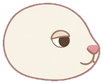
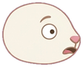

← Play Bioconnect · How to play
The Rabbit
The rabbit is the first animal on Bioconnect's food chain. It lives anywhere there is grass, it loves to eat, and beyond that there is honestly not much to say about it. He hates being called an "ordinary rabbit", so please try not to say it to his face. But he is. He is a very ordinary rabbit.


- Place on the food chain
- Step 3, right after the plants. Two grass tiles make a rabbit. Two rabbits make a fox.
- Eats
- Grass and sprouts.
- Eaten by
- Foxes, wolves and bears. The elephant will also eat a rabbit if you grew that rabbit by merging.
- Appetite
- The biggest on the meadow. No animal gets hungry faster.
Why the rabbit is always hungry
The rabbit eats grass, and it eats a lot of it. Of all the animals in Bioconnect, it is the one that gets hungry the fastest. When it is hungry it eats one grass or sprout tile touching it, and that square becomes empty again. If there is nothing green beside it for too long, the rabbit starves and leaves bones behind, and bones take up a square until a merge clears them.
So a rabbit sitting in a corner of the meadow will quietly mow down every plant around it, and then it will be in trouble.
The plan: make a fox before the grass runs out
A rabbit is not meant to stay a rabbit for long. Before it eats all the grass around it, put a second rabbit right next to it. The two merge into a fox, and you are one step further up the food chain.
- Plant rabbits next to rabbits. Your hand deals rabbits directly, so you rarely have to wait. Place a new rabbit where it touches one that is already on the board.
- Grow grass next to a rabbit. Two grass tiles merging beside a rabbit make a new rabbit, and that one merges straight into a fox. One tap, two steps.
- Watch the warning. A hungry rabbit shows a warning on its tile. That is your cue to either give it grass or give it a partner.
- Mind the fox. Once you have a fox, a rabbit standing next to it is lunch. That can be useful when the fox needs food, and annoying when you were saving that rabbit for the next merge.
Real rabbits
Real rabbits really are serious eaters. They graze on grass and leafy plants for hours every day, mostly around dawn and dusk. Their front teeth never stop growing, and all that chewing is what keeps them worn down. Their eyes sit high on the sides of the head, so they can see almost all the way around them, which helps when so many animals would like to eat them. In Bioconnect that list is foxes, wolves and bears.